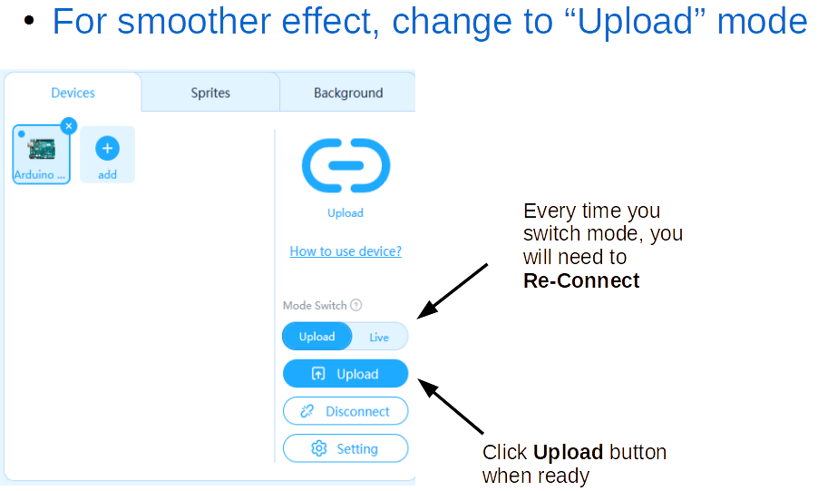
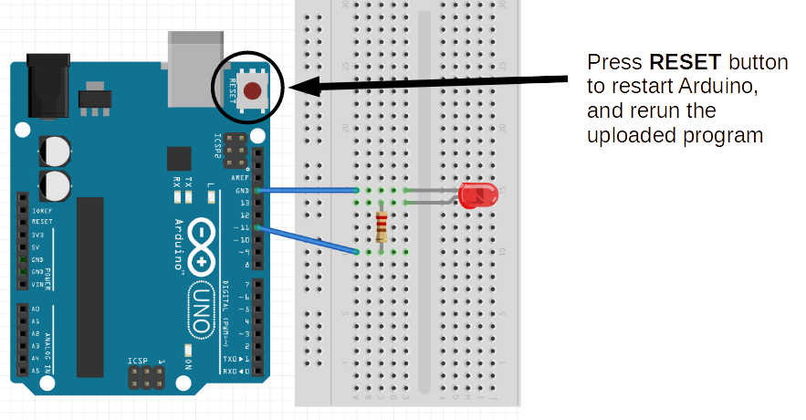

Extra Challenges
2c Upload Mode



NOTE: If you want to change back to "Live Mode" after using "Upload Mode" you will need to also reset the frimware - click the Setting button and follow instructions.
2d Slider
Back to "Live Mode" convert your variable to a Slider and use it as a graphical Variable Dimmer Switch
2e UI Dashboard
Create a Graphical Dashboard to control Lights (on/off buttons, slider dimmers, blink buttons)
2f Toggle Dimmer
Use a physical button to act as a Toggle Dimmer Switch (on/off)
2g Light Show
Use multiple LEDs to create a Light Show with blinking, dimming, and any other effects you can muster! (probably works best with "Upload Mode")